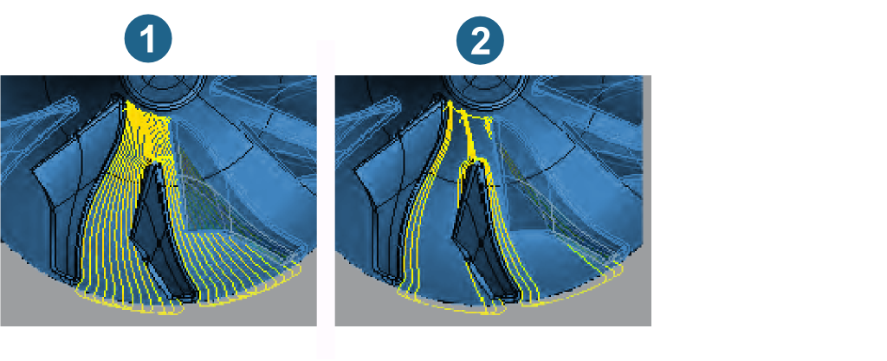
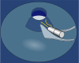
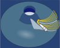
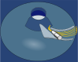
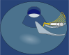

MB Hub Finishing
Strategy
The hub is finished pocket-by-pocket between the main blades.
Different finishing strategies provide various ways to optimize the calculation of the path distribution and the tool inclination.
The same applies to the area-by-area adjustment of the feedrates and to several other detailed features.
Milling strategy
When finishing, you can choose between complete (Fig. 1) or partial machining (Fig. 2) of the hub. In both cases, the paths follow the flow profile.
However, in the case of partial machining, the output of the paths at the edge is limited to a number that has to be specified. This function can therefore be used to carry out rest machining on the hub surface.
|  |
Optimize: If this option is enabled, every second path on the trailing side is shortened taking into account the Minimum distance.
Infeed strategy
Machining can be carried out in the same way as for roughing.
-
Flow
-
Paths are interpolated fluidly between the blades and so follow the direction of the flow profile.
-
Flow zigzag: Generates paths from the inside to the outside and is useful when there is a large thickness of material above the hub.
-
Flow zigzag next: Always starts at the selected entry position to the left of the pocket, is shorter and particularly useful when there is a small thickness of material above the hub.
-
Flow oneway: Always starts at the selected entry position to the left of the pocket so that all paths are in climb milling.
-
-
Offset pocket
-
Paths are calculated as offsets from the blades and trimmed against each other in the center. If Complete machining is enabled, the Opening cut option is provided on the Parameter tab. Feedrate and Spindle speed can then be adjusted to the full cutting conditions of the opening cut.
-
This strategy is only available for parts without splitters or for parts with splitters in Pocket mode.
-
Entry position
Leading side / Trailing side: You can machine either on the leading (1) or trailing edge (2). With a constant machining direction, the entry position is generally dependent on the best possible lead angle.
 |
Edge rolling
Edge rolling achieves a uniform allowance on the main blade’s edges.
Example of use: (1) → , (2) → , (3) → . The latter is the preferred option for ‘blunt’ geometry of the edge. Here, the toolpath is extended tangentially.
 |
Note
When the Pocket split function is activated, edge rolling can only take place for the edge of the main blade at the entry position. Therefore, only the edge for which edge rolling must be defined is displayed in the user interface.
Pocket split
When machining pockets between the blades, individual areas can be machined with a larger tool. The Pocket split therefore enables a significantly shorter machining time and increases the efficiency of machining.
The following machining options are available for the pocket split.
 |
Off: No pocket split takes place. Leading and trailing sides are machined together with continuous paths. Complete machining is therefore carried out with the smallest tool required – in the example shown, Ø 3. |
|

|
Only lead: Only the area of the leading side will be machined. This allows a tool with a larger diameter to be used – in the example shown Ø 3. Machining is carried out on parts
|
|
Trailing edge ...: Only the area of the trailing side will be machined. The tool must fit between the main blade and the splitter blade. Machining ends on parts
WarningWith Trailing edge complete / Trailing edge left / Trailing edge right the Leading side entry position may only be used if the Leading side has already been machined, otherwise there is a risk of collision with the unmachined stock! |
|
|

|
Trailing edge complete: This is the complementary machining for Only lead. The tool is usually the same as when the pocket function is switched off – in the example shown Ø3. |
|
Trailing edge left / Trailing edge right: Both options are only available for parts with a splitter and complement each other to ensure complete machining. If the pockets to the left and right of the splinter blade are of different widths at the narrowest point, both pockets can be machined separately and therefore with differently sized tools. |
|
|

|
Trailing edge left: In the example shown, the left pocket can be machined with a Ø4 tool so that the machining time can be further reduced. |
|

|
Trailing edge right: In the example shown, the right pocket can only be machined with a Ø3 tool. |
Special options
Skip last path: If machining of paths near the blades takes place followed by finishing machining (requirement: blade and tool are stable enough), this option skips the last machining path (near the blade), thus reducing the machining time by the corresponding amount.